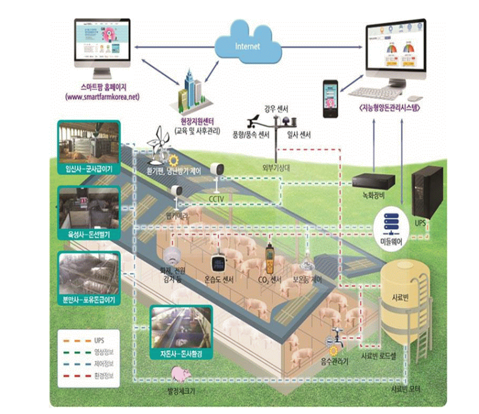
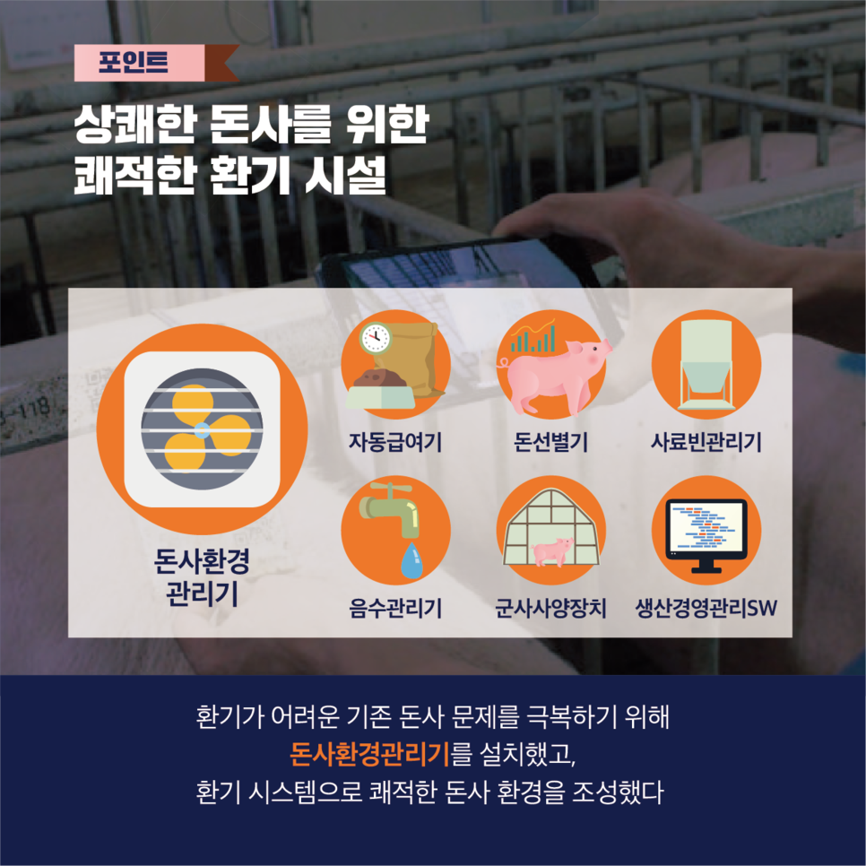
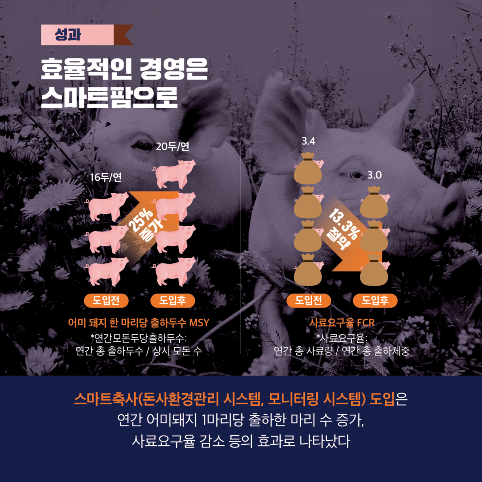
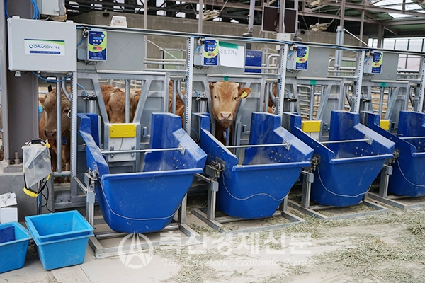
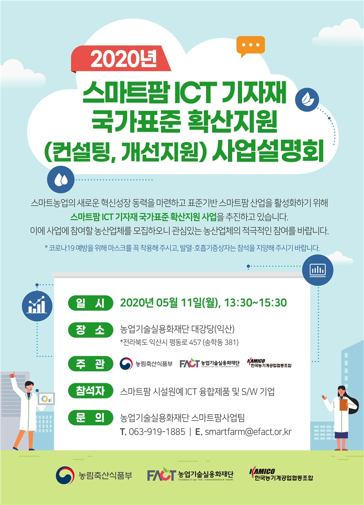

스마트팜에대한 웹사이트를 만들게 된 이유는 많은 사람들이 스마트팜을 농사에만 사용한다고 생각하는 데 사실 스마트팜은 농,림,축,수산물에서 다 사용 됩니다.이번 시간을 통해 스마트 팜의 가축에서 사용을 알리고 저는 진로에 관련해서 탐구할 계기가 되면 좋겠습니다
정의
스마트팜은 농,림,축,수산물의 생산,가공,유통 단게에서 정보 통신 기술(ICT)을 접목하여 지능화된 농업 시스템

장점
1-스마트폰 등의 원격 조작으로 시간과 공간의 자유성 증가
2-생체바이오칩으로 가축의 세부적인 상태 확인의 정확성과 신속성 증가=효율성 증가
3-최적의 상태유지로 질병 발생 예방,동물 복지 향상


문제점
1-1세대와 2세대의 갈등이 많은 상황이다. 1세대는 스마트팜 도입을 반대하는 입장인 반면 2세대는 적극적으로 스마트팜을 도입하고 싶어 하기 때문이다.
2-현재 국내에 축적된 스마트팜 데이터가 부족한 실정이다. 우리나라 축산 농장 대부분은 WEDA, 아코펑키 등 외국 제품을 많이 이용고 있는데, 해당 제품에 축적된 데이터들은 각 회사로 즉,외국으로 수집된다.=생산과정에서 필요한 스마트팜 데이터가 부족해 성장원동력이 없는 상황
3-ICT장비를 다룰 줄 아는 전문 인력이 부족하다. 축산 농장에서 일하는 대부분의 근로자가 외국인이기 때문에 ICT 장비를 도입하더라도 사용함에 있어 어려움이 있다.
3-영세농가의 생존이다. 막대한 자본을 가진 대규모 사육농가는 스마트팜을 도입하여 생산성이 높일 수 있지만, 상대적으로 영세한 농가는 가격경쟁에 밀려 도태될 수 있다.

문제 해결
스마트팜에 대한 교육 및 지원 증가,영세농가의 스마트팜 지원 확대

느낀점
직업적 목표로 가축의 동물 복지를 향상하는 일을 하고 싶었는데 스마트팜을 탐구하면서 탐구 내용을 이용해서 목표를 이룰수있을것같다는 느낌을 받았고 대학교 진학 후 가축에 대해 공부하면서 스마트팜의 기능을 더 높이겠다는 새로운 목표가 생겼다